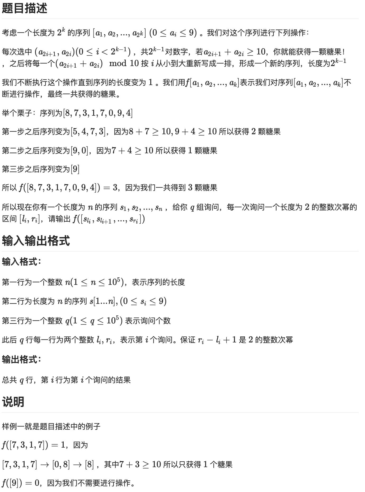

比赛链接
Codeforces Round #572 (Div. 2)
A. Keanu Reeves
题目大意
对于一个\(01\)字符串，当它中间\(0\)的数量和\(1\)的数量不同时，称它为一个好的序列，否则称它为一个不好的序列。
给出一个长度为\(n\)的\(01\)字符串，将它划分为几个字符串，使划分出的几个字符串都是好的序列。
求最少划分出几个字符串，并任意输出一种方案。
解题思路
很显然，答案要么是\(1\)要么是\(2\)。
考虑为\(2\)的情况，我们只需要找到一个分界点满足前面一段的\(0\)的数量和\(1\)的数量不同且后面一段的\(0\)和\(1\)的数量也不同就行了。
那么我们记\(pre_{0/1,i}\)和\(nxt_{0/1,i}\)分别表示\(i\)这个位置之前和之后的\(01\)数量，预处理出来后直接枚举一边就行了。
参考代码
1 | /*Program from Luvwgyx*/ |
B. Number Circle
题目大意
给定\(n\)个数，要将它们填入一个环内，满足每个位置上的值都严格小于它两边的数的和，问能否满足条件，若可以则还需输出方案。
解题思路
很显然，从小到大排序，若最大值不严格小于比他小的两个数之和则无解，否则即有一种可行方案如下：
设\(x、y、z\)分别为最大的三个值，且\(x>y>z\)，则\(a_1=y,a_2=x,a_3=z\)，然后再将剩下的数从大到小依次填入即可。
参考代码
1 | /*Program from Luvwgyx*/ |
C. Candies!
题目大意

不想翻译了。
解题思路
很显然，顺序毫无影响，那么我们只需要预处理前缀和，就可以\(O(1)\)回答询问了。
参考代码
1 | /*Program from Luvwgyx*/ |
D1. Add on a Tree
题目大意
给定一棵树，树上的边权初始为\(0\)，你可以在任意两个叶子之间的简单路径上的边上加上一个权值实数\(x\)。问：能否在有限次数的操作内，得到边权任意组合的树。
解题思路
很显然只有当存在某一个点度数为\(2\)的时候无解，否则一定有解。
参考代码
1 | /*Program from Luvwgyx*/ |
D2. Add on a Tree: Revolution
题目大意
给定一棵树，树上的每条边都有边权，保证边权全为偶数。现在你每次可以选择两个叶子结点，将它们的路径上的点都加上一个权值，权值可正可负，问能否在\(10^5\)操作内将树变为与给定树一致。
解题思路
我们将每条边拎出来单独考虑，设当前边为\((u,v,w)\)，发现只有以下几种情况：
- \(u\)和\(v\)同为叶子结点，那么直接加上\(w\)就好了。
- \(u\)为叶子结点，\(v\)不是，那么我们在以\(v\)为根的树内，以除\(u\)以外的儿子结点为根的子树内找到两个叶子结点\(x\)和\(y\)，那么给路径\(u \to x\)加上\(\frac{w}{2}\)，\(u \to y\)加上\(\frac{w}{2}\)，\(x \to y\)加上\(- \frac{w}{2}\)。
- \(u\)和\(v\)都不为叶子结点，那么我们分别在以\(v\)为根的树内，以除\(u\)以外的儿子结点为根的子树内找到两个叶子结点\(x_1\)和\(y_1\)，以\(u\)为根的树内，以除\(v\)以外的儿子结点为根的子树内找到两个叶子结点\(x_2\)和\(y_2\)。那么给\(x_1 \to x_2\)加上\(\frac{w}{2}\)，\(y_1 \to y_2\)加上\(\frac{w}{2}\)，\(x_1 \to y_1\)加上\(-\frac{w}{2}\)，\(x_2 \to y_2\)加上\(-\frac{w}{2}\)。
有一点点小细节自己考虑吧。
参考代码
1 | /*Program from Luvwgyx*/ |
E. Count Pairs
题目大意
给定一个质数\(p\)，一个长度为\(n\)的序列\(a_1,a_2, \cdots , a_n\)和一个整数\(k\)。
求所有数对\((i,j)(1 \leqslant i,j \leqslant n)\)中满足\((a_i+a_j)(a_i^2+a_j^2) \equiv k\mod p\)的个数。
解题思路
我们先将式子化一下： \[ (a_i^2-a_j^2)(a_i^2+a_j^2) \equiv k(a_i-a_j)\mod p\\ a_i^4-a_j^4 \equiv ka_i - ka_j \mod p\\ a_i^4-ka_i \equiv a_j^4-ka_j \mod p \] 由于\(k\)确定，所以我们将\(a_i^4-ka_i\)取模后丢进\(map\)里，然后就可以统计有多少个数和它相同了。
参考代码
1 |
|